Nivel:Inicial-medio
Restauración
de sillas
Aprendé a restaurar, rediseñar y devolverle
el valor a piezas con historia.
Información del curso
Duración:4 semanas
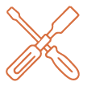
Modalidad:Teórico-práctica

Proyecto:1 silla restaurada
Aprendé haciendo
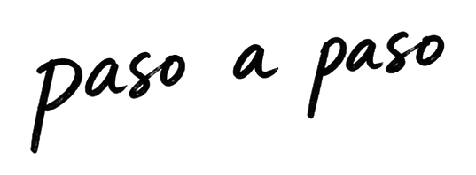
Mirada
técnica
Detectá daños, estructura
y potencial
Manos a
la obra
Desarme, reparación
y ensamblaje
Acabados
finales
Lijado, color y
terminación final
Tu silla,
lista
Al final te llevás una
pieza restaurada
Formación integral
Vení y aprendé
Formate en restauración con un recorrido claro y práctico, desde
el diagnóstico técnico hasta la terminación final.
+150
Alumnos
formados
formados
+30 hs
De contenido
práctico
práctico
100%
Proyecto
real
real
$110.000 ARS
Hasta 6 cuotas sin interés de
$29.999 ARS
Comprar curso
¡Probá 1 clase gratis!
Medios de pago disponibles
Programa del curso
Del diagnóstico al renacimiento
Un recorrido práctico para aprender a leer, reparar y transformar una silla con una mirada contemporánea.
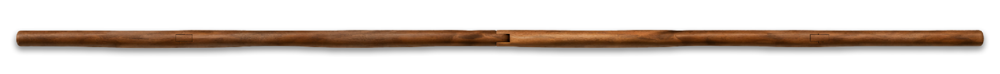
Leemos la pieza, detectamos daños y definimos el plan de trabajo antes de intervenir.
- Evaluación estructural
- Materiales y uniones
- Plan de restauración

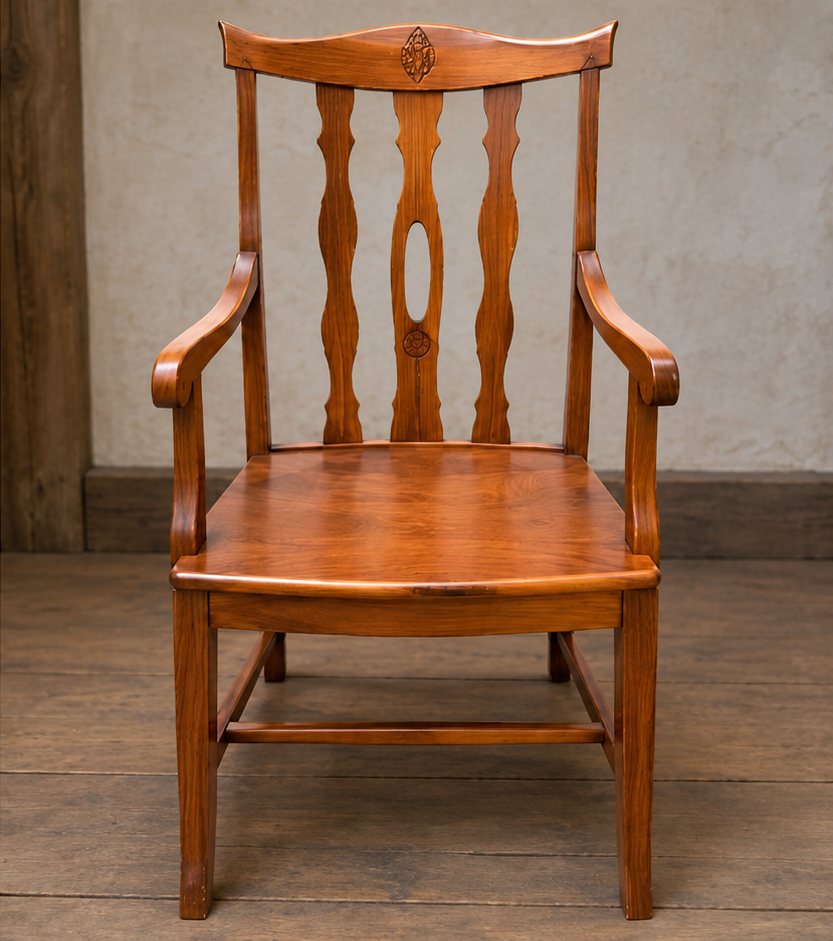
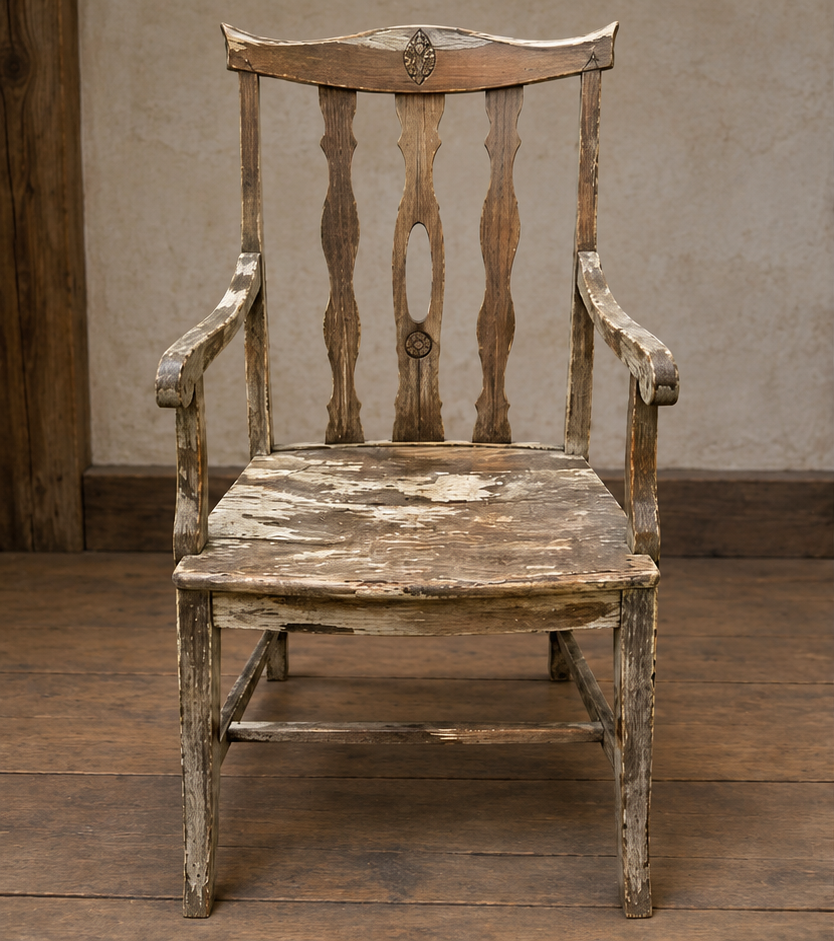
Antes Después
Del desgaste al
resultado final
En el curso recorrés un proceso completo para transformar una silla real, desde el diagnóstico inicial hasta la reparación, el acabado y la presentación final.
Me interesa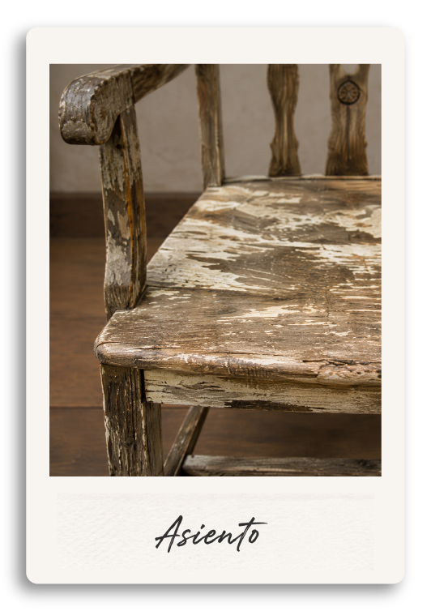
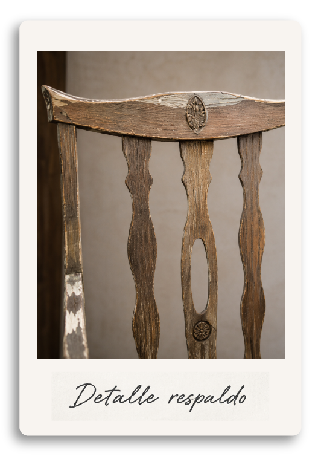
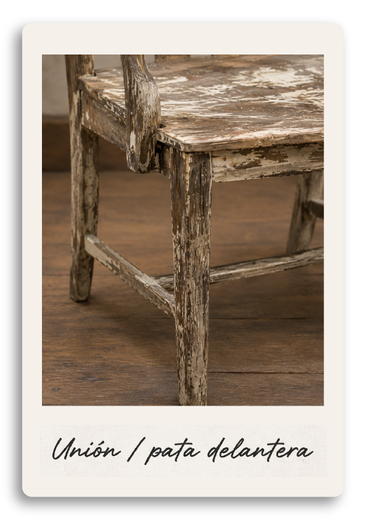
Conocé a tus profes
Aprendé junto a profesionales que trabajan cada pieza desde el
oficio, el diseño y la experiencia real de taller.
.png) Lucía Ferraro
Lucía Ferraro
.png)
.png)
.png)
.png) Martín Salvatierra
Martín Salvatierra
.png)
.png)
.png)
.png) Camila Bianchi
Camila Bianchi
.png)
.png)
.png)
.png) Tomás Leiva
Tomás Leiva
.png)
.png)
.png)
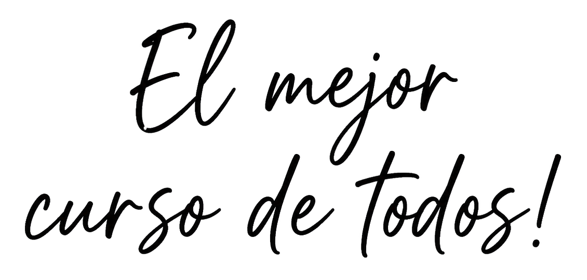
Voces del taller
Experiencias reales de quienes aprendieron a reparar, conservar
y rediseñar una silla con sus propias manos.
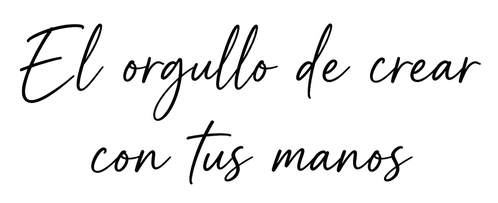
Llegué sin saber por dónde empezar y terminé entendiendo cada parte de la silla. Me gustó que no se trató solo de reparar, sino de tomar decisiones con criterio.
El curso me ayudó a perderle miedo a las herramientas. Aprendí a diagnosticar la estructura, reforzar uniones y darle una terminación mucho más prolija.
Traje una silla heredada que pensaba que no tenía arreglo. En el proceso aprendí a conservar su historia y devolverle uso sin que perdiera su carácter.
Me sorprendió lo práctico que fue. Cada clase tenía una etapa concreta y al final pude ver una increíble y fugaz transformación real hecha con mis propias manos.
Las explicaciones son claras y van directo a lo importante. Pude avanzar a mi ritmo y volver a cada técnica cuando la necesitaba en el taller.
Siempre quise recuperar muebles, pero no sabía cómo evaluar una pieza. Ahora puedo reconocer qué conservar, qué reparar y cómo planificar cada paso.
Lo disfruté muchísimo. La combinación entre técnica y diseño me dio libertad para animarme a una terminación más personal, sin perder el respeto por la pieza.
Aprendí por qué mis reparaciones anteriores no duraban. Entender las uniones y preparar bien la madera cambió por completo mi forma de trabajar.
La silla que elegí estaba floja y muy marcada. Hoy es la pieza que más miradas se lleva en casa y, sobre todo, quedó firme y lista para muchos años más.
Sentí que me acompañaban incluso a la distancia. Los ejemplos y los detalles de cada proceso hacen que sea muy fácil llevar la teoría a la práctica.
Fue mi primer proyecto de restauración y nunca me sentí perdida. El orden de las clases te da confianza para avanzar y entender cada decisión.
El resultado superó lo que imaginaba. No solo recuperé una silla: me llevé un método que ya estoy usando para mirar otros muebles con nuevos ojos.
Antes de empezar
Preguntas
frecuentes
Respondemos las dudas más comunes sobre
cursos, restauración y procesos de trabajo.
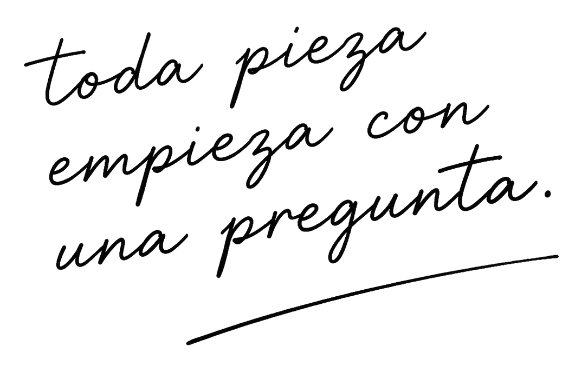
No. El curso está pensado para aprender desde cero, con acompañamiento paso a paso. Vas a aprender a observar la pieza, detectar problemas, intervenir la estructura y trabajar terminaciones básicas.
Sí, la propuesta es trabajar sobre una silla real durante todo el recorrido. Antes de comenzar te ayudamos a elegir una pieza adecuada: firme, de madera y con un nivel de intervención acorde al curso.
Incluye más de 30 horas de contenido teórico-práctico, guías de apoyo, acompañamiento personalizado y acceso a la comunidad de alumnos. La silla, los materiales y las herramientas corren por cuenta de cada participante.
El recorrido está organizado en cuatro semanas. Cada etapa combina explicación y práctica para que puedas avanzar de forma ordenada, desde el diagnóstico inicial hasta la terminación final.
Te llevás tu silla restaurada y un método de trabajo que podés aplicar en futuros proyectos: evaluar una pieza, planificar la intervención, reparar su estructura y elegir una terminación con criterio.
Claro. Si preferís que nuestro equipo restaure una pieza por vos, podés enviarnos fotos, medidas y una breve descripción desde la sección de contacto. Evaluamos el estado del mueble y te orientamos sobre las posibilidades.
¿Interesado?
Dejá tu correo electrónico y nos pondremos en contacto contigo en breve.